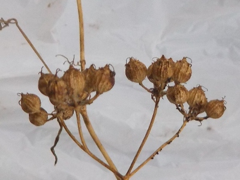
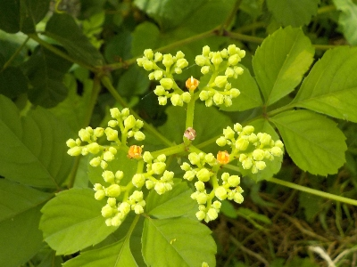

遊びで植物を育てよう
2025/07/26
葉っぱもののタネが出来そうです。

これはたぶんサンチュかな？
普段は放置で飛んで生えたものを育てるんだけど、これを収穫しようかな？
そこまでして大量に食べたい？うーん寒くなったら生野菜は食べたくないな。
でもまあ、試しに育ててみようかな。
【7月TOP】
【日記TOP】
【園芸TOP】
2025/07/19
パクチーのタネを収穫しました。

パクチーが茶色く枯れた状態になったのでタネを収穫しました。
このタネで来年も種蒔きをするんでしょう。
【7月TOP】
【日記TOP】
【園芸TOP】
2025/07/01
ヤブガラシを引っこ抜いています。

気づいたら大きくなっていますよね。見つけたら取ろうとは思うんですが、あちこちで生えているのできりがないです。
なので巨大化したものだけ抜いています。
【7月TOP】
【日記TOP】
【園芸TOP】
過去の日記
【2024年7月の日記】
【2023年7月の日記】
【2022年7月の日記】
【2021年7月の日記】
【2020年7月の日記】
【2019年7月の日記】
【2018年7月の日記】
【2017年7月の日記】
【2016年7月の日記】
【2015年7月の日記】
【2014年7月の日記】
【2013年7月の日記】
【2012年7月の日記】
【7月TOP】
【日記TOP】
【園芸TOP】
熱中症に注意しましょう。
【おいしいものを食べよう。】【たくさん寝よう。】
【ソロ活をしよう!】【季節感のあることをしよう。】【動画視聴はほどほどに。】【当サイトの全てのコンテンツは無断転載禁止です。】